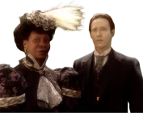
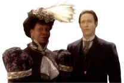
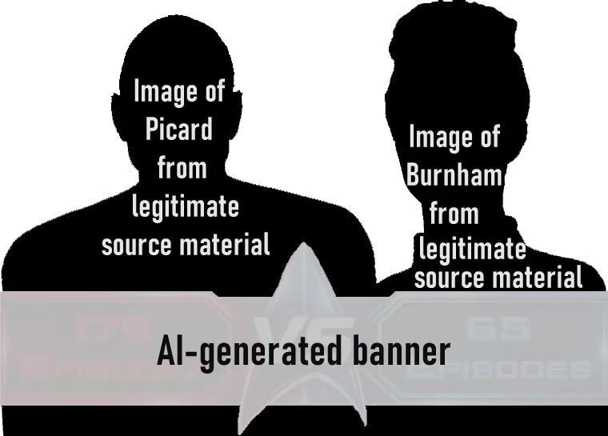

@c6reviews.
@c6reviews.❱ Who is C6?
❱ What makes this site different?
❱ Support C6
❱ AI Policy
❱ Conventions used on this site
I had nothing to do with that unfortunate Mars incident.

C6Reviews.com is created and maintained by one man, as a personal project, primarily for his own entertainment.
As Star Trek has entered a new era since the premiere of Star Trek: Discovery in 2017, more and more people are being introduced to the Star Trek Universe. It is my hope that this site can serve as a resource for newcomers and long-time fans alike, to help better understand the events and stories, and to find the links between them. This site operates on the following key principles:
- Star Trek is for everyone, and everyone has their own version of what Trek means to them. There are Trek fans of all ages, and generational differences are often what determine which era of Trek resonates most with an individual.
- There is no era of Trek, nor any particular Trek show or movie, that is “wrong” or “not Trek”. Everyone is welcome to dislike a particular series or even an entire era of Trek, but that does not invalidate its standing in canon.
- When I “rate” a show, that is just my opinion. You might love an episode that I hate, or you might hate an episode that I love, and that's perfectly okay! In fact, that's the whole point! My ratings are not to be taken as any sort of universal truth.
- I have no hard and fast rules about what Trek “should” or “shouldn't” be. I think it's important to allow yourself to enjoy each new iteration of Star Trek in its own light, and not get hung up on comparing it to things that came before.
C6 is just another of many internet denizens who posts his opinions about Star Trek stuff. His opinion is no more important than anyone else's, it's just that he took the time to make this idiotic website. C6 grew up in the 90s with Star Trek shows like The Next Generation, Deep Space Nine, and Voyager, and he's excited that Trek has made a return to television (okay, a streaming service). C6 has spent much of his life trying to temper his enthusiasm for Star Trek and not be too “nerdy” about it, but he's starting to embrace his inner Trekkie as he gets older.
Feel free to reach out to C6 on his Bluesky social media account @c6reviews.bsky.social.
- Designed for first-time viewers and long-time fans: This site is designed with the first-time viewer in mind, but also in such a way that long-time fans should also find valuable.
- Spoiler avoidance: This site strives to avoid spoiling any episode or show that you haven't watched yet – even the full timeline has spoilers hidden.
- Easily find links and references: This site gets to the point of each episode and makes it easy to find connections to other episodes and series. Everything on the site will eventually be linked together, from each episode to the timeline and back!
I am certainly not trying to monetize this site, nor do I expect to make any sort of profit off of this. I made this site as a personal project for my own enjoyment and hopefully for the occasional new Star Trek fan who wanders across the site. If you are feeling generous and you like my work, you can visit my Ko-fi page at https://ko-fi.com/c6reviews/ and/or use the “support” link at the top-right of most pages. Proceeds will be used toward the maintenance of this site which includes registration of the domain, storage, etc.
Generally speaking, the content on this website comes from my own mind and hands, with limited exceptions:
| Writing, Opinions, and Other Text Content | ✅ | 0% generative AI: | I would never use AI to write for me, create opinions about Star Trek material, or generate any other text content. All of the written content is my own unless explicitly quoted as being from another source, but that source will never be AI. |
| Coding | ✅ | 0% generative AI: | This site is entirely hand-coded in HTML, CSS, and JavaScript, using a simple text editor. While AI has sometimes helped me with specific coding questions, I use it to understand and fix problems on my own, and never to just write blocks of code in my stead. |
| Images of Star Trek characters, ships, etc. | ⚠️ | Limited AI image editing: | Images containing Star Trek material always come from legitimate sources (like shows and movies) and are never AI-generated. While I edit most of the site's images by hand, I have used AI for things like upscaling poor-quality images and occasionally for content generation, which is limited to adding style elements or “uncropping” images that were cut off because of older television aspect ratios. Some examples of these image manipulations are shown below. |
| Other Images | ❗️ | May be AI‑generated: | Obviously the image of the C6 android (seen above and in the site logo) is AI‑generated, although it is loosely based on an actual photo of myself. I generally try to avoid AI-generated content, but it may happen from time to time. This site will never deceptively try to pass off an AI-generated image as something legitimate. |

Original

“Uncropped”


Here are some conventions I use on the site that may raise an eyebrow, so I figured it would be worth acknowledging them:
- Star Trek “Generations”
Not to be confused with the film Star Trek Generations, I use the terms First Gen, Second Gen, and Third Gen to refer to Star Trek productions made in certain year ranges. These are my own designations and are NOT “official” by any means. I use these designations because I don't like naming them after the executive producer of those eras – I don't think it's fair to give all the credit or all the blame to a single person when it comes to evaluating the content.- First Gen Trek (1966–1991) includes The Original Series, The Animated Series, and films #1–#6.
- The first and second generations overlap (1987-1991) because The Next Generation premiered while two more films with the original cast were still on the way, and the ethos of the Original Series was still very much an influence in the early seasons of TNG.
- Second Gen Trek (1987–2005) includes The Next Generation, Deep Space Nine, Voyager, Enterprise, and films #7–#10. Commonly referred to as the “Berman Era”, named after the executive producer of the time.
- During the long television hiatus between 2005 and 2017, the “Kelvin Trilogy” of films (#11-#13) were released. Since they take place in an alternate timeline, I don't consider them part of either the Second or Third generations of Trek. They are their own thing. These films are sometimes referred to as the “Abrams-verse”, named after the producer, J.J. Abrams.
- Third Gen Trek (2017–ongoing) includes Discovery, Short Treks, Picard, Lower Decks, Prodigy, Strange New Worlds, Starfleet Academy, and film #14. Commonly referred to as the “Kurtzman Era”, named after the executive producer of the time.
- No capitalization of “easter egg”
When talking about little things hidden in a TV show or movie intended for fans to find and enjoy, like an in-joke or background set piece, the term “easter egg” is commonly used. I choose not to capitalize “Easter” in this case because the term has nothing to do with the holiday and is referring more to the idea of a “hidden egg”. Not capitalizing the word is actually meant to be out of respect for the holiday, since its use in this context would take way from the meaning of the upper-case “Easter”. - Punctuation kept outside of quotation marks
Though I am American, myself, I have chosen to use the British convention of keeping ending punctuation outside of quotation marks, unless the punctuation is specifically part of the quote. Putting periods and commas inside closing quotations marks is an aesthetic choice, but I prefer the logical order of the British convention. I would argue that reversing the quote and punctuation mark would look aesthetically acceptable to us if that is what we were used to seeing.